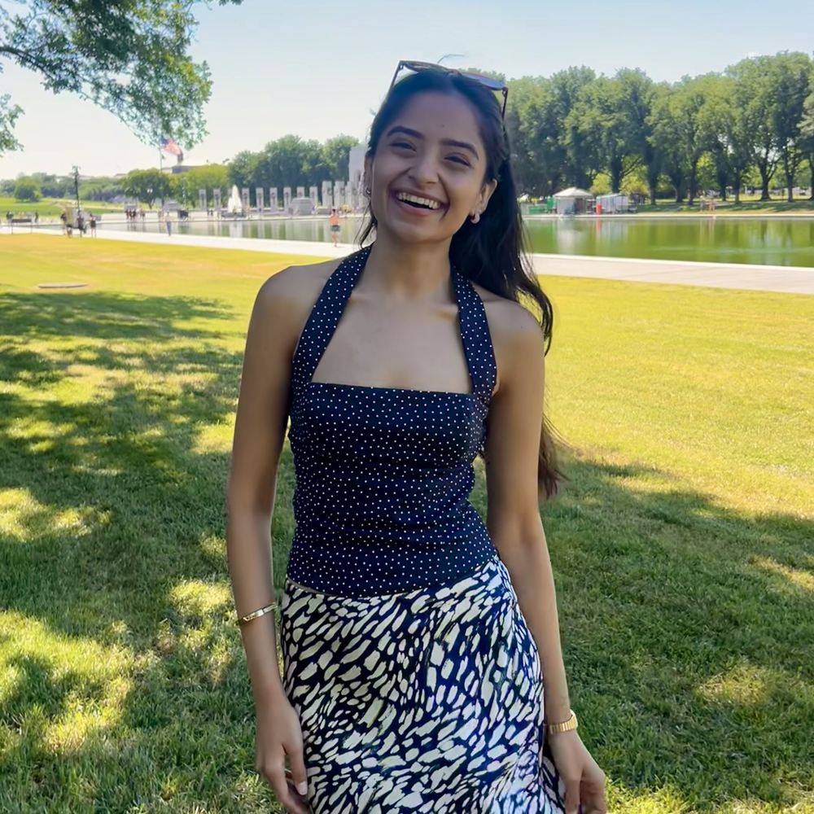
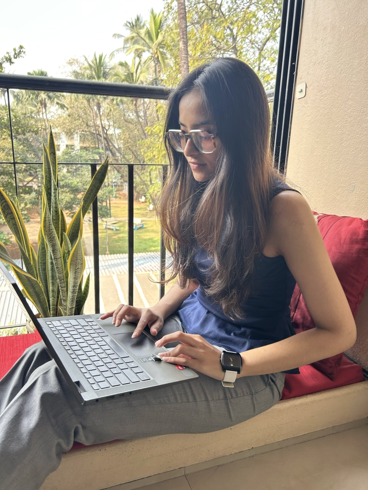

Your Ally for Modern Sustainability
we'll figure

I ask way too many questions. To everyone around me, about everything around me.
Then I go read, listen, dig, and fact check, until I understand something well enough to make it everyone's problem too.
That's how YAMS was built.
There are plenty of modern problems (that everyone should be sus about), and they need modern solutions, not fancy ones. we'll figure together.
I am an inquisitive person who thinks in frameworks. I like research, analysis, and the part where you keep digging until something finally makes sense, and hopefully makes an impact.
I work across decarbonisation, circular economy, sustainable materials, reporting and regulation. Sounds fancy? It is.
But what I enjoy the most is taking the fancy out of it. Making it modern-day relatable, so anyone can understand it, and actually do something about it.
explore my skills, expertise and experience
scroll timeline →
explore my work by:
Want to collaborate?
modern problems? modern solutions. we'll figure.
first, who are you?
Interested to take this further?

fill in the basics and I'll reach out to take it further
Super excited to receive this. I'll revert soon and we'll figure how to make it work :)
I am. Help me out with quick questions? I promise it's fun.
This is an experiment. I want to see how brands, governments, content and sustainability actually land with people, and where the gaps are. All questions have options, so there is nothing to type. let's figure together!